L1 Security - Encryption
1、AWS Security & Encryption
KMS, Encryption SDK, SSM Parameter Stogy
1-1 Why encryption? Encryption in flight (SSL)
- Data is encrypted before sending and decrypted after receiving
- SSL certificates help with encryption (HTTPS)
- Encryption in flight ensures no MITM (man in the middle attack) can happen
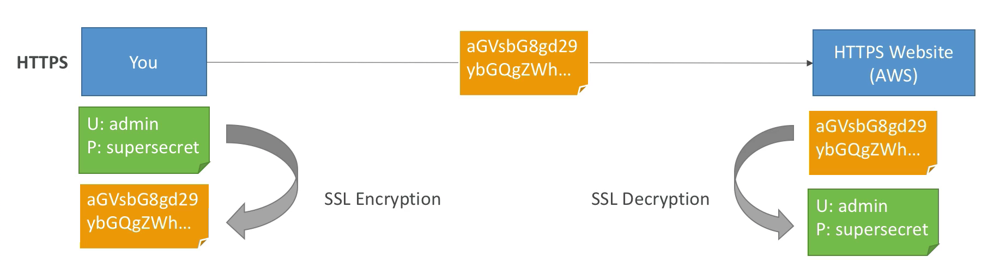
1-2 Why encryption? Server side encryption at rest
- Server side manages encryption and the decryption
- Data is encrypted after being received by the server
- Data is decrypted before being sent
- It is stored in an encrypted form thanks to a key (usually a data key)
- The encryption / decryption keys and object must be managed somewhere and the server must have access to it
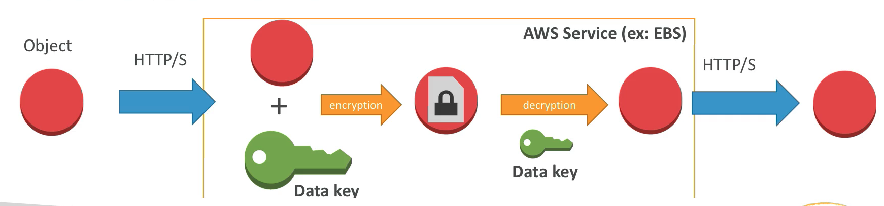
- The encryption and the encryption keys must be managed somewhere usually called a KMS(Key Management Service)
- The server must have the right to talk to that KMS.
1-3 Why encryption? Client side encryption
- Data is encrypted by the client and never decrypted by the server
- Data will be decrypted by a receiving client
- The server should not be able to decrypt the data
- Could leverage Envelope Encryption
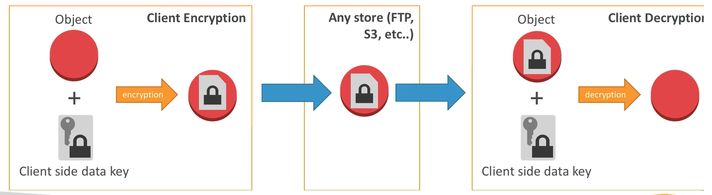
Not using any KMS
2、S3 Encryption (Reminder)
2-1 S3 Encryption for Objects
- There are 4 methods of encrypting objects in S3
SSE-S3: Encrypts S3 objects using keys handled & managed by AWSSSE-KMS: Leverage AWS Key Management Service to manage encryption keysSSE-C: When you want to manage your own encryption keys- Client Side Encryption
It's important to understand which ones are adapted to which situation for the exam
2-2 SSE-S3
- SSE-S3: encryption using keys handled & managed by AWS S3
- Object is encrypted server side
- AES-256 encryption type
- Must set header:
"x-amz-server-side-encryption": "AES256"when you send your data to Amazon
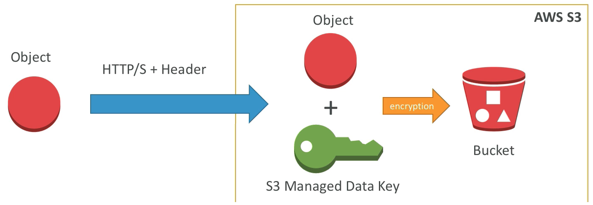
2-3 SSE-KMS
- SSE-KMS: encryption using keys handled & managed by KMS
- KMS Advantages: user control + audit trail
- Object is encrypted server side
- Must set header:
"x-amz-servereside-encryption":"aws:kms"
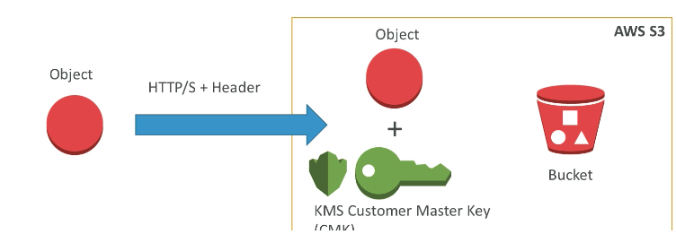
The difference between SSE-S3 and SSE-KMS is that the key that is used is a KMS customer master key(CMK) that you can manage over time while SSE-S3 using keys handled & managed by AWS S3
2-4 SSE-C
- SSE-C: server-side encryption using data keys fully managed by the customer outside of AWS
- Amazon S3 does not store the encryption key you provide
- HTTPS must be used
- Encryption key must provided in HTTP headers, for every HTTP request made
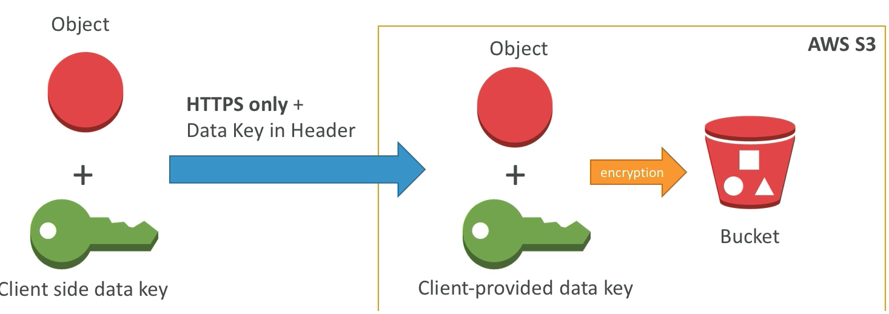
2-5 Client Side Encryption
- Client library such as the Amazon S3 Encryption Client
- Clients must encrypt data themselves before sending to S3
- Clients must decrypt data themselves when retrieving from S3
- Customer fully manages the keys and encryption cycle
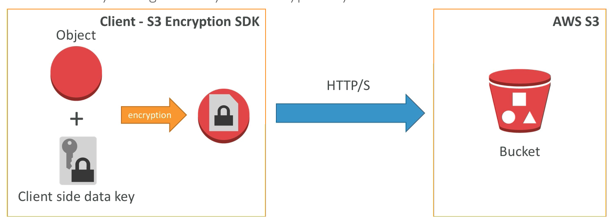
2-6 Encryption in transit (SSL)
-
AWS S3 exposes:
- HTTP endpoint: non encrypted
- HTTPS endpoint: encryption in flight
-
You're free to use the endpoint you want, but HTTPS is recommended
- HTTPS is mandatory for SSE-C
- Encryption in flight is also called SSL /TLS
2-7 S3 encryption Example
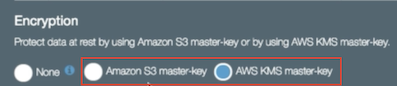
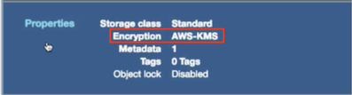
3、KMS Overview
3-1 AWS KMS (Key Management Service)
- Anytime you hear "encryption" for an AWS service, it's most likely KMS
- Easy way to control access to your data, AWS manages keys for us
- Fully integrated with IAM for authorization
- Seamlessly integrated into:
- Amazon EBS: encrypt volumes
- Amazon S3: Server side encryption of objects
- Amazon Redshift: encryption of data
- Amazon RDS: encryption of data
- Amazon SSM: Parameter store
- Etc...
- Seamlessly integrated into:
- But you can also use the CLI / SDK
3-2 AWS KMS 101
- Anytime you need to share sensitive information... use KMS
- Database passwords
- Credentials to external service
- Private Key of SSL certificates
- The value in KMS is that the CMK used to encrypt data can never be retrieved by the user, and the CMK can be rotated for extra security
- Never ever store your secrets in plaintext, especially in your code!
- Encrypted secrets can be stored in the code / environment variables
- KMS can only help in encrypting up to 4KB of data per call
- If
data > 4 KB, use envelope encryption - To give access to KMS to someone:
- Make sure the Key Policy allows the user
- Make sure the IAM Policy allows the API calls
Envelope Encryption:
Basically will generate a new data key and that that key will be used to encrypt the big data sets.
3-3 AWS KMS (Key Management Service)
- Able to fully manage the keys & policies:
- Create
- Rotation policies
- Disable
- Enable
- Able to audit key usage (using CloudTrail)
- Three types of Customer Master Keys (CMK):
- AWS Managed Service Default CMK: free
- User Keys created in KMS:
$1 / month - User Keys imported (must be 256-bit symmetric key):
$1 / month
+pay for API call to KMS ($0.03 / 10000 calls)
3-4 How does KMS work? API - Encrypt and Decrypt
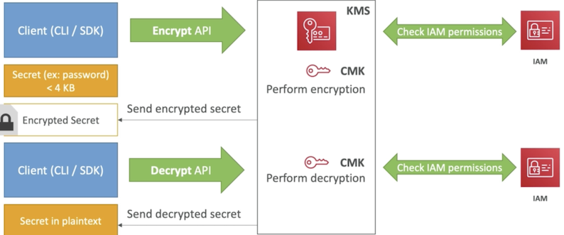
- Encrypted API that within the KMS service check the CMK
- IAM permission check: User allowed to do this CMK encrypt call within IAM.
- Encryption happens by CMK and then KMS will send back the encrypted secrets. (never seen the CMK)
- use the CLI or the SDK again issue a decrypt API call and using the same CMK it again
- KMS will check the information for decrypt access and key policy.
- Decryption happen and send back the decrypted secrets in plaintext.
3-5 Encryption in AWS Services
-
Requires migration (through Snapshot / Backup):
- EBS Volumes
- RDS databases
- ElastiCache
- EFS network file system
-
In-place encryption(Only One):
- S3
3-6 Cloud HSM (Hardware Security Module)
- KMS => AWS manages the software for encryption
- CloudHSM => AWS provisions encryption hardware
- Dedicated Hardware (HSM = Hardware Security Module)
- You manage your own encryption keys entirely (not AWS)
- The CloudHSM hardware device is tamper resistant
- FIPS 140-2 Level 3 compliance
- CloudHSM clusters are spread across multi AZ (HA)
- Supports both symmetric and asymmetric encryption (SSL/TLS keys)
- No free tier available
- Must use the CloudHSM Client Software
- Not as easy as the KMS API call with the CLI.
3-7 CloudHSM Diagram
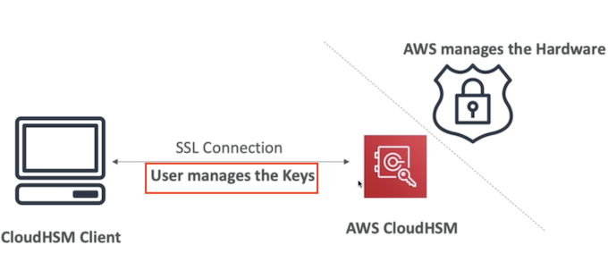
Exam
- Dedicated encryption hardware
- Control over the user keys but still be in AWS's cloud
- Have asymmetric type of encryption
3-8 CloudHSM VS KMS
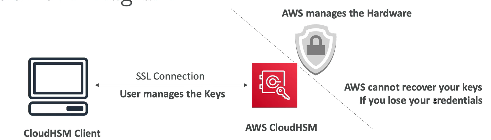
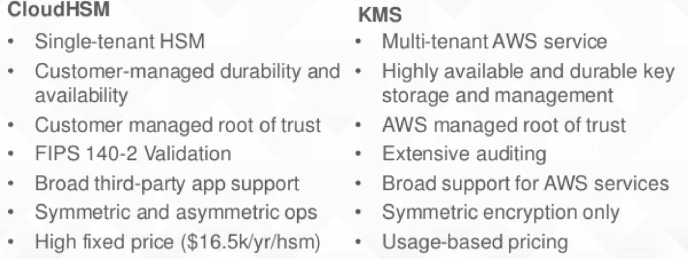
4、KMS Key Rotation
4-1 KMS Automatic Key Rotation
- For Customer-managed CMK (not AWS managed CMK)
- If enabled: automatic key rotation happens every 1 year
- Previous key is kept active so you can decrypt old data
- New Key has the same CMK ID(only the backing is changed)
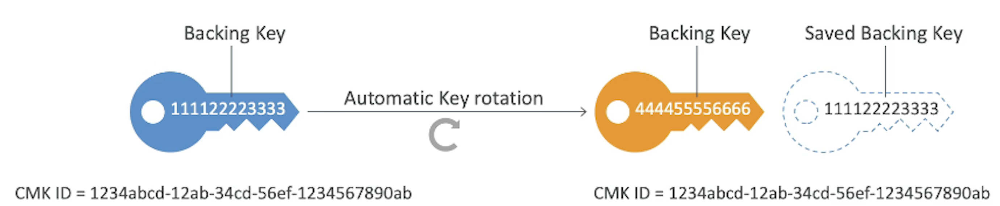
4-2 KMS Manual Key Rotation
- When you want to rotate key every 90 days, 180 days, etc...
- New Key has a dilTerent, CMK ID
- Keep the previous key active so you can decrypt old data
- Better to use aliases in this case (to hide the change of key for the application)
- Good solution to rotate CMK that are not eligible for automatic rotation (like asymmetric CMK)
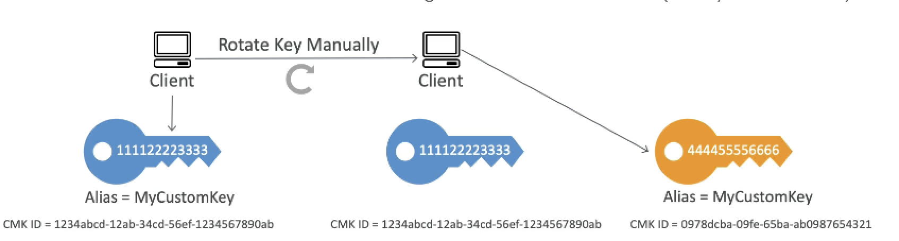
4-3 KMS Alias Updating
Better to use aliases in this case (to hide the change of key for application)
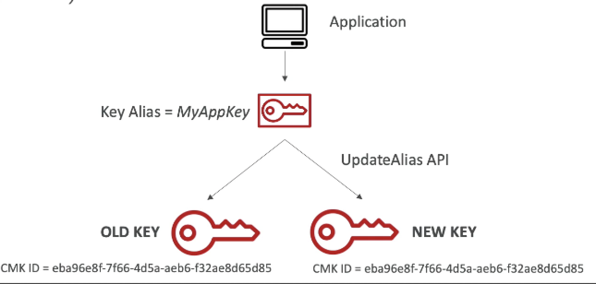